Create AWS ELB with Self-Signed SSL Cert#
Self-signing SSL Cert#
- Generate self-sign certificate using this command:
openssl req -x509 -nodes -days 365 -newkey rsa:2048 -keyout privateKey.key -out certificate.crt
- Verify the key and certificate generated
openssl rsa -in privateKey.key -check
openssl x509 -in certificate.crt -text -noout
- Convert the key and cert into .pem encoded file
openssl rsa -in privateKey.key -text > private.pem
openssl x509 -inform PEM -in certificate.crt > public.pem
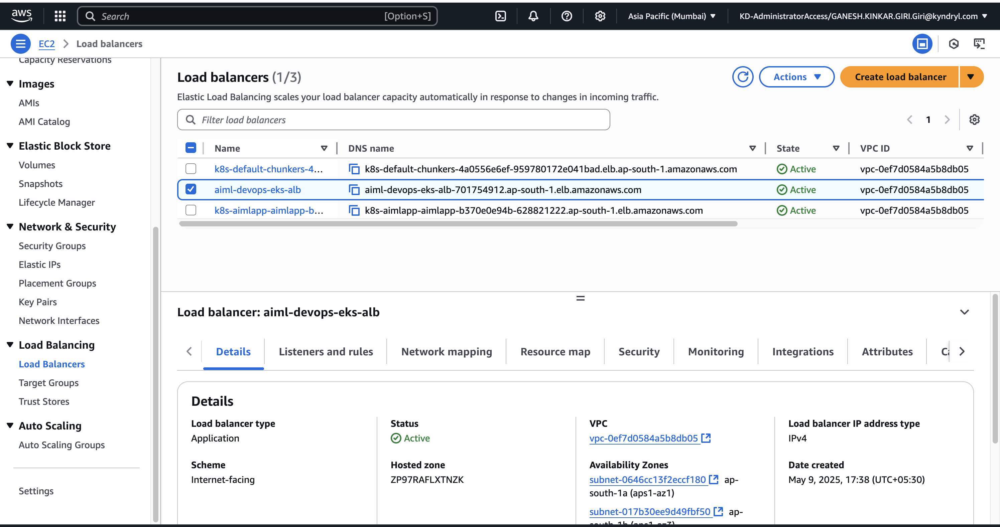
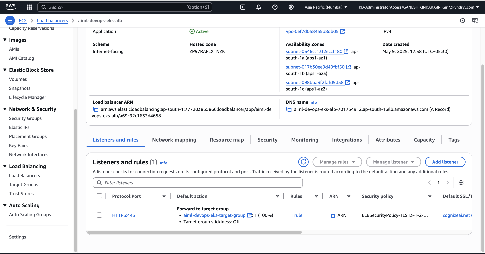
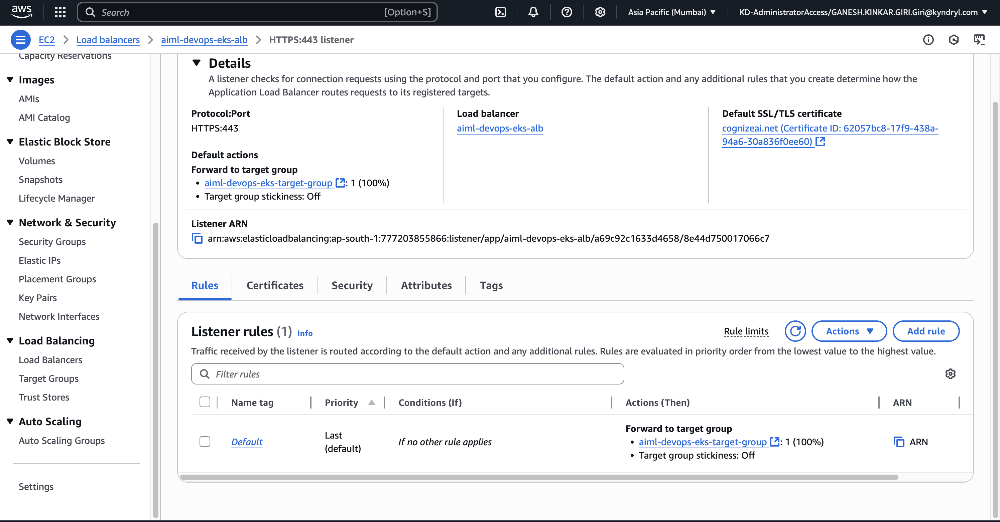
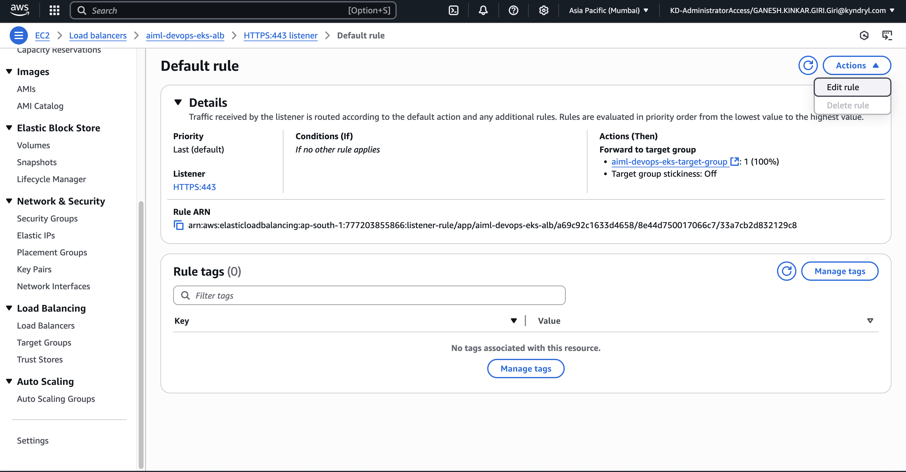
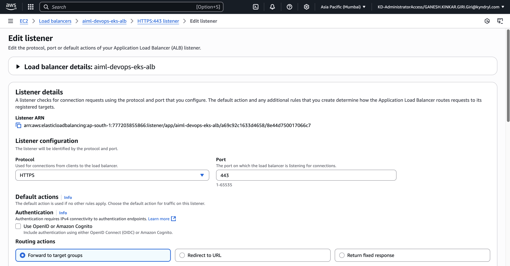
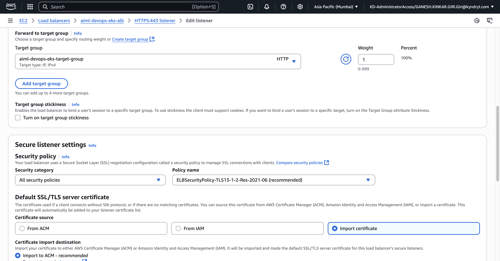
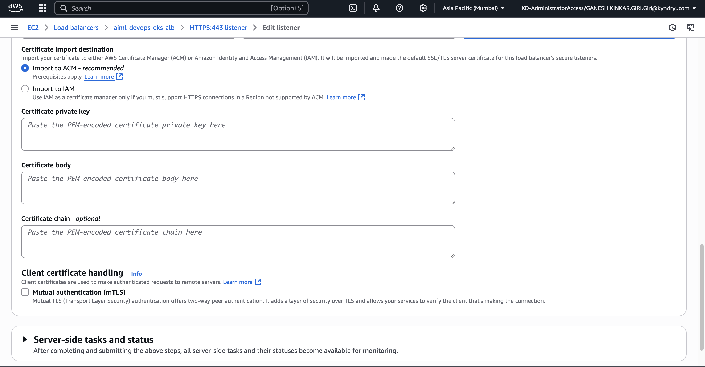
- Certificate private key (privateKey.key content)
- Certificate body (certificate.crt content)
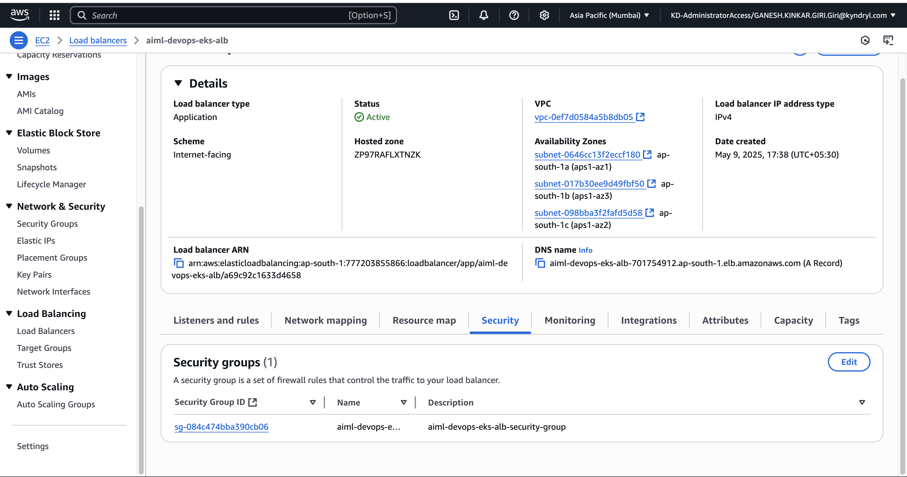
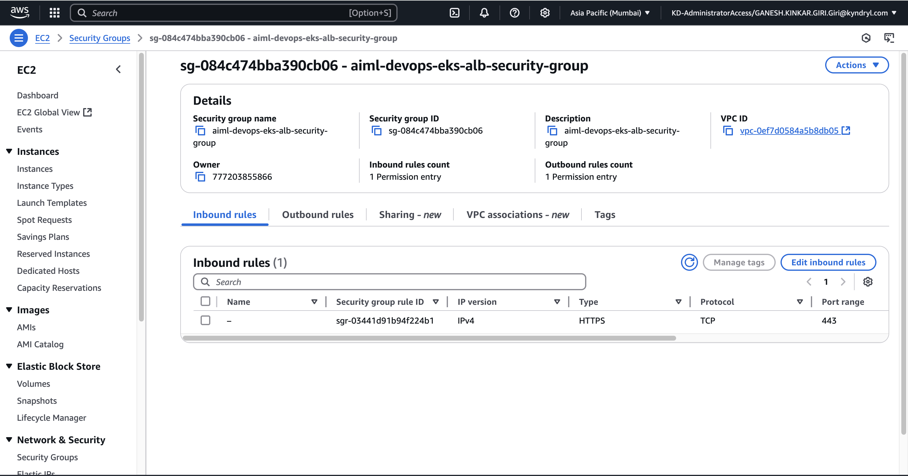
certificate-arn#
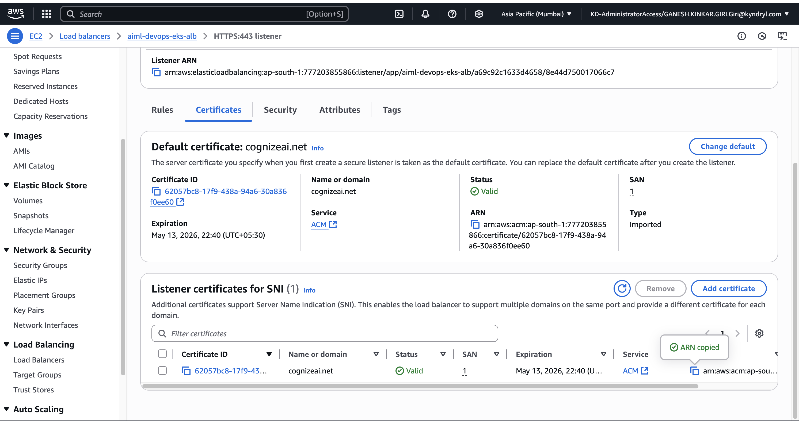
nginx-ingress.yaml#
apiVersion: networking.k8s.io/v1
kind: Ingress
metadata:
name: aiml-app
annotations:
alb.ingress.kubernetes.io/scheme: internet-facing
alb.ingress.kubernetes.io/target-type: ip
alb.ingress.kubernetes.io/listen-ports: '[{"HTTPS":443}]'
alb.ingress.kubernetes.io/certificate-arn: arn:aws:acm:ap-south-1:7772:certificate/62057bc8-17f9-438a-94a6-30
alb.ingress.kubernetes.io/ssl-redirect: '443'
alb.ingress.kubernetes.io/healthcheck-path: /
spec:
ingressClassName: alb
tls:
- hosts:
- cognizeai.net
secretName: tls-secret # optional if using ACM certificate with ALB
rules:
- host: cognizeai.net
http:
paths:
- path: /
pathType: Prefix
backend:
service:
name: simcard-shelf-space-service
port:
number: 5004
- path: /bms
pathType: Prefix
backend:
service:
name: battery-management-system-service
port:
number: 9290
- path: /semiconductor
pathType: Prefix
backend:
service:
name: semiconductor-failure-detection-service
port:
number: 5000
kubectl apply -f nginx-ingress.yaml -n aiml-app
NAME CLASS HOSTS ADDRESS PORTS AGE
ingress.networking.k8s.io/aiml-app alb cognizeai.net k8s-p-aimlapp-8821222.ap-south-1.elb.amazonaws.com 80, 443 24m
nslookup k8s-aimlapp-aimlapp-b370-6288.ap-south-1.elb.amazonaws.com
Server: 49.205.72.130
Address: 49.205.72.130#53
Non-authoritative answer:
Name: k8s-aimlapp-aimlapp-b370e0-6288.ap-south-1.elb.amazonaws.com
Address: 35.154.82.208
Name: k8s-aimlapp-aimlapp-b370e0-6288.ap-south-1.elb.amazonaws.com
Address: 65.0.223.248
Name: k8s-aimlapp-aimlapp-b370e0-6288.ap-south-1.elb.amazonaws.com
Address: 35.154.117.203
vi /etc/hosts
65.0.223.248 cognizeai.net
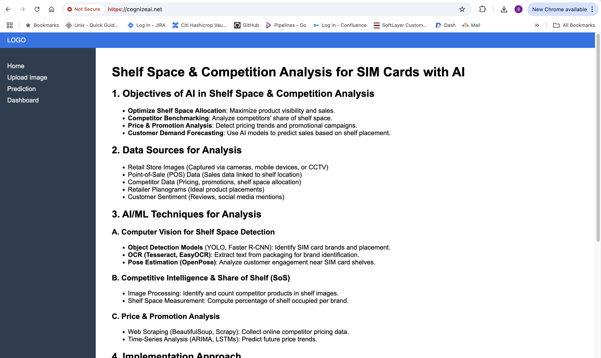
Route 53 Dashboard#
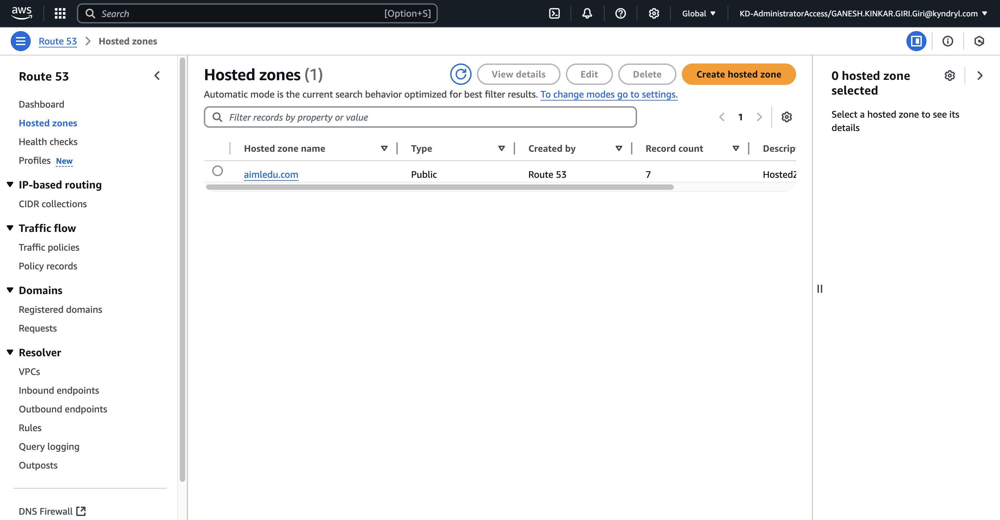
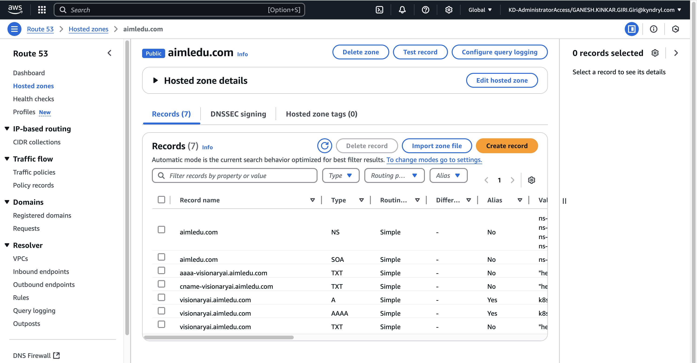
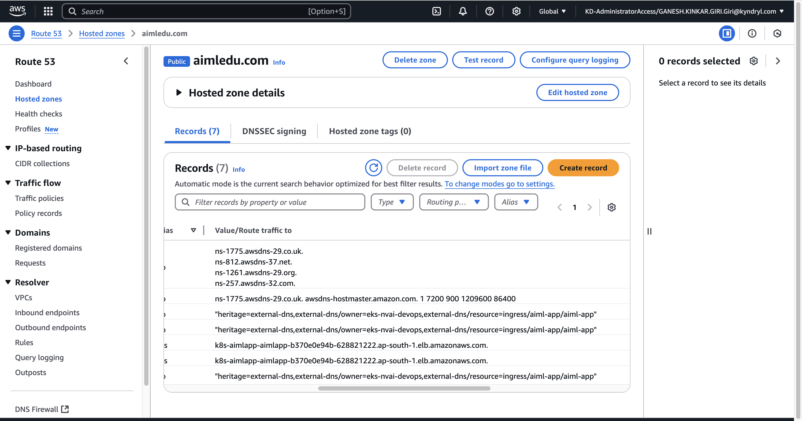